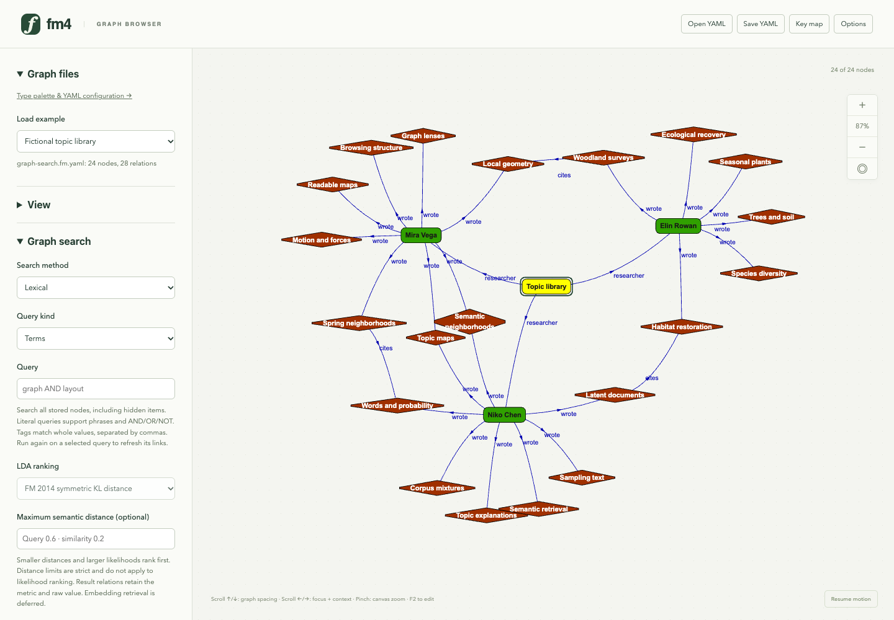
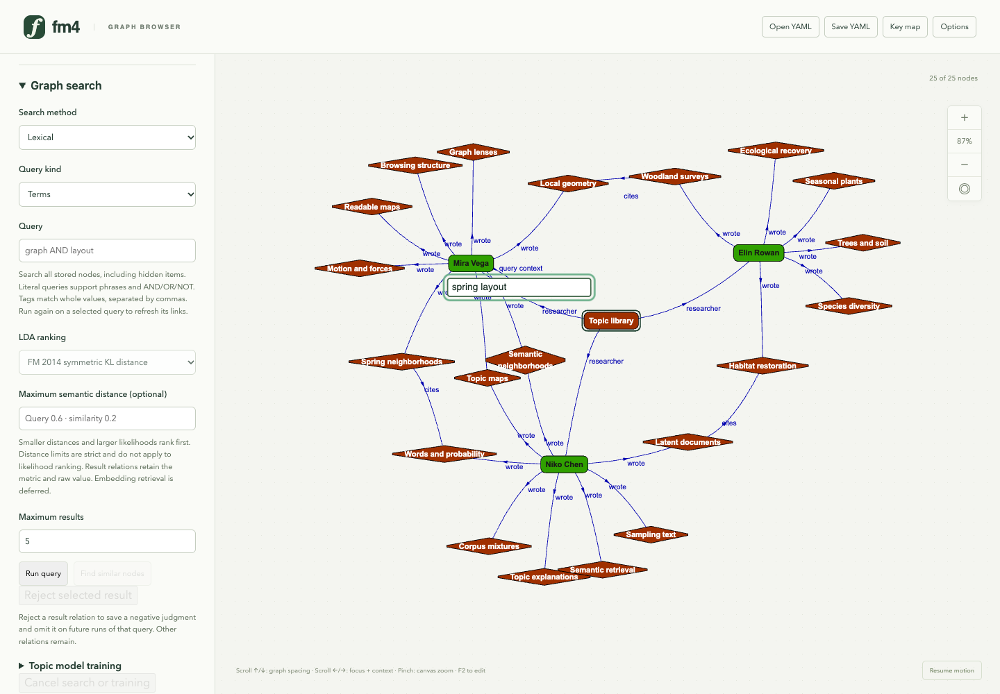
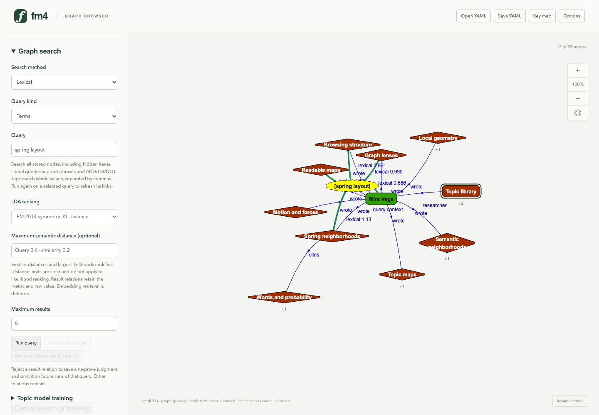
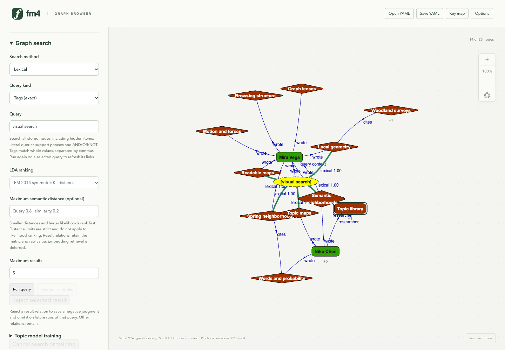
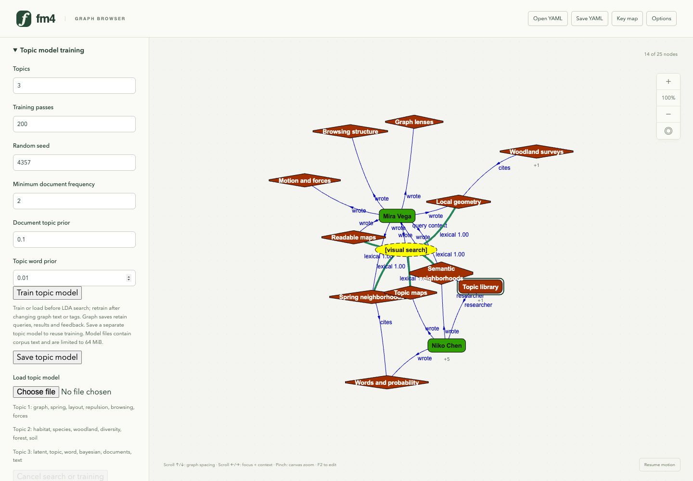
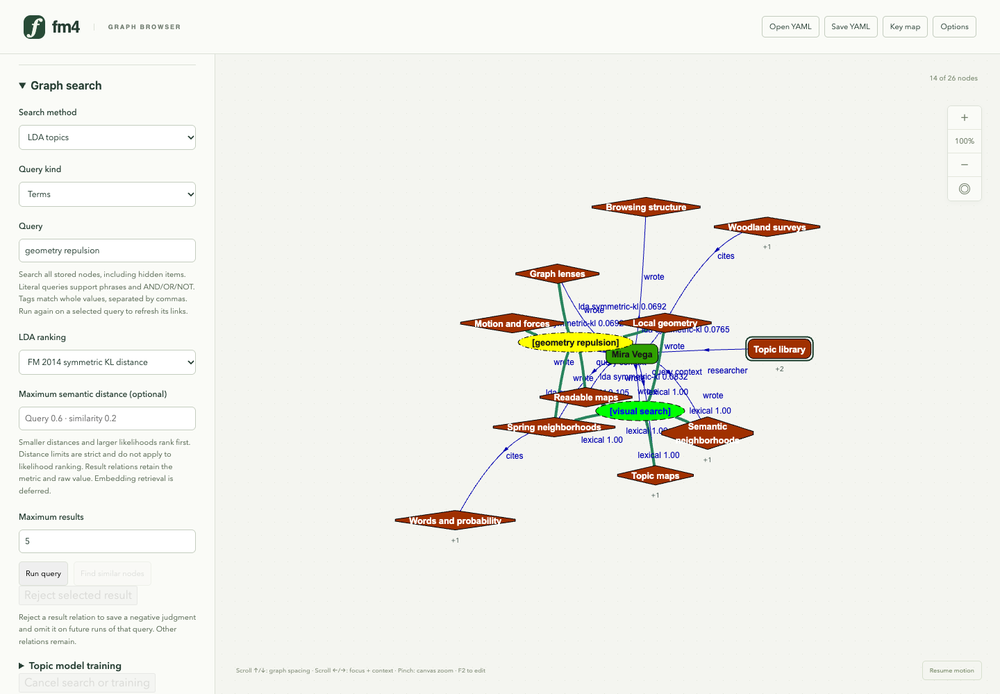
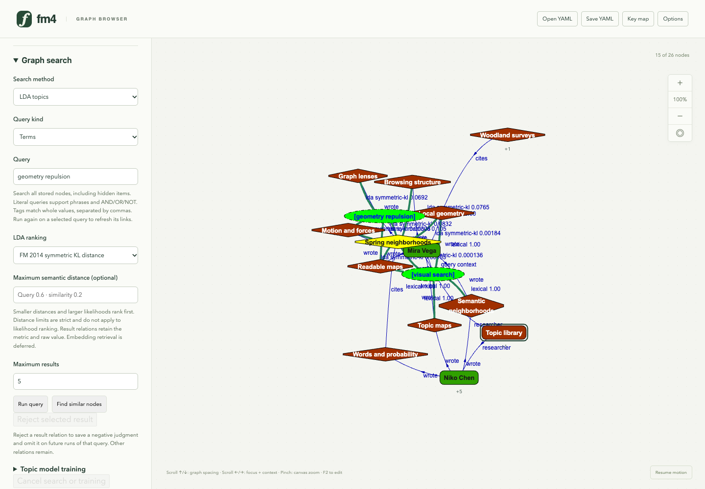
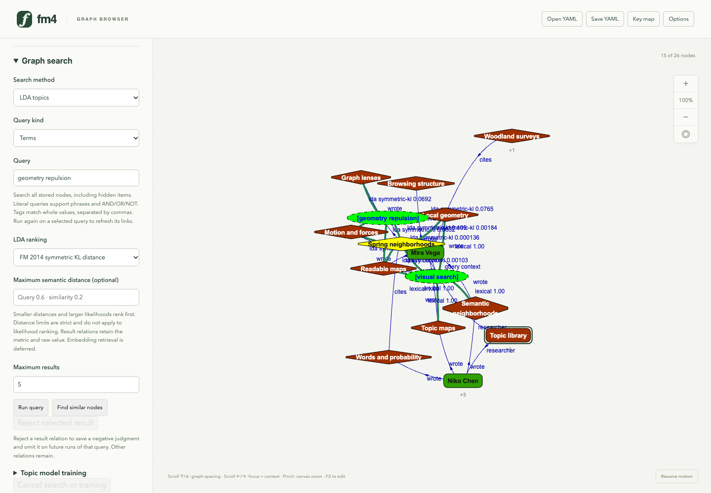
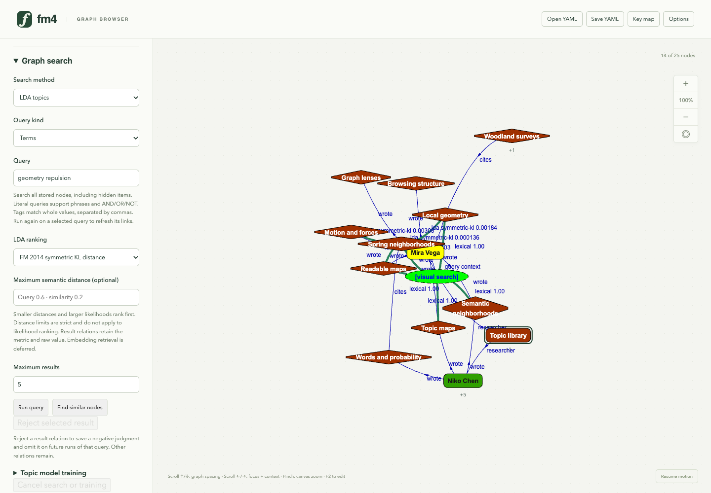

1. A searchable research library

This new fictional graph contains 24 nodes and 28 semantic relations: three researchers, eighteen papers, two bridge papers and a collection. Labels, annotations and exact tags are searchable, including currently hidden items. RFC and the viewing lens remain independent controls.
2. Start a search directly on the graph

Select Mira Vega and press Ctrl+F. A query node appears immediately, linked to Mira as context, with its text editor on the graph. Type spring layout and press Enter to retrieve. The empty draft is excluded from the search corpus; ordinary typing and text deletion keep their normal meaning.
3. A term query joins its context

Enter runs the elasticlunr literal query for spring layout. The radius-two neighborhood shows ranked matches and their ordinary context; other content stays stored and searchable. Green relations carry ranked relevance alongside authored/citation links. F2 edits and reruns the query without duplicating it; the sidebar offers the same search controls.
4. Whole-tag retrieval

The same query node now retrieves exact visual search tags. Tags are explicit metadata and work without topic training. The query replaces its earlier result links while retaining context and manual semantic relations.
5. Train and inspect topics

Three topics are trained locally for 200 serial Gibbs passes with seed 4357, alpha 0.1, beta 0.01 and minimum document frequency 2. Separate local JSON files can save/reload the model and its corpus. The most probable words make the fitted topics inspectable. This deliberately separated synthetic corpus does not establish general retrieval quality.
6. Retrieve by inferred topics

Ctrl+Shift+F starts a separate LDA query on the graph. Enter submits geometry repulsion to the trained topic model. Symmetric KL distance in bits ranks document topic mixtures, with a strict default limit of 0.6; lower distances are better. The earlier tag query remains available. Search scores stay separate from importance and RFC physics.
7. Use an existing paper as the query

Select Spring neighborhoods and press Ctrl+Shift+R to retrieve similar items from its topic mixture, excluding itself. Ctrl+R provides literal similarity. Existing authored/citation relations remain. Results expand ordinary graph browsing without requiring a separate results page.
8. Retain a negative judgment

Rejecting a selected green result relation removes that link and saves its source, target, query, engine and corpus provenance. Repeating the same query omits that item. Native YAML saves queries, remaining links and feedback; model JSON is saved separately through the training controls. Feedback learning remains future work.
9. Remove a query and keep the source graph

Select the LDA text-query node and press Ctrl+Backspace (or Ctrl+Delete) while graph focus is active. Only that query and its incident associations disappear; retrieved papers, original semantic relations, the earlier tag query and the paper-based similarity search remain. Native YAML can retain the queries and rejection judgments you choose to keep.